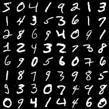

PyTorch
PyTorchとは？
PyTorchは、オープンソースのPython ディープラーニングライブラリです。もともと、Facebookによって開発されていたものです。
公式サイトでは、PyTorchを以下のように説明しています。
An open source machine learning framework that accelerates the path from research prototyping to production deployment.
訳： 研究用プロトタイプからプロダクト開発までのパスを加速させる、オープンソースの機械学習フレームワーク。
ディープラーニングを書くためのライブラリはいくつか存在します。GoogleのTensorFlowやその高レベルAPIであるKeras、Preffered NetworkdsのChainerが有名です。この中で近年人気を増やしているのがPyTorchです。Google Trendsによる検索数の比較を見てみましょう。検索数が一番多いのはTensorFlowで2番目がKersaで３番目がPyTorchです。徐々にTensorFlowや Kerasの検索数が減っているのに対し、PyTorchの検索数は徐々に増えているのがみて取れます。近年になってPyTorchの人気が高まっているのがわかります。
PyTorchの人気の秘密は、その書きやすさとプロダクトへの運用のしやすさのバランスにあると思います。たとえば、Kerasは非常に書きやすいライブラリですが、実運用にはやや工夫が必要になります。TensorFlowは、2.0になってからやや書きやすくなったものの、複雑なAPIを操作する必要があります。PyTorchはその中で現実的なバランスを持っています。ある程度の書きやすさを維持したまま、運用のしやすさを両立しています。
PyTorchのプログラムを書いてみよう
実際のPyTorchのプログラムがどのようなものかをみていきましょう。手始めに 手書き数字のデータセットであるMNISTをPyTorchで認識させてみましょう。MNISTに含まれている数字を描画すると以下のようになります。

PyTorchのコードは以下のようになります。https://github.com/convergence-lab/Entering-PyTorch/blob/master/src/about_pytorch/mnist/mnist.pyから入手できます。
from tqdm import tqdm
import torch
from torch import nn, optim
import torch.nn.functional as F
from torchvision import datasets, transforms
class Net(nn.Module):
"""Net Module
MNISTを学習するためのネットワーク
"""
def __init__(self):
"""__init__ではNetworkの初期化をする。
どのようなレイヤを使うのかを定義する
"""
super(Net, self).__init__()
self.base_net = nn.Sequential( # base_netは特徴分析用のネットワーク
nn.Conv2d(1, 20, 5, 1), # Conv2Dレイヤ
nn.ReLU(), # ReLU活性化関数
nn.MaxPool2d(2), # axpoolingレイヤ
nn.Conv2d(20, 40, 5, 1), # Conv2Dレイヤ
nn.ReLU() # ReLU活性化関数
)
self.classfier = nn.Sequential( # classifierは分類用のネットワーク
nn.Linear(40*8*8, 100), # Linearレイや、 40*8*8ユニットの入力を受けて、 100ユニットを出力する
nn.ReLU(), # ReLU活性化関数
nn.Linear(100, 10), # Linearレイヤ MNISTは 10この数字を当てる問題なので出力は10ユニット
nn.LogSoftmax(dim=1) # LogSoftmaxレイヤ
)
def forward(self, x):
"""forwardでは、どのようにデータをネットワークに通すかを書く
"""
x = self.base_net(x) # base_netへ特徴を通す
x = x.view(-1, 40*8*8) # base_netと classifierでは入力テンソルの形が違うので変形する
x = self.classfier(x) # classifierへ通す
return x
def train(model, device, train_loader, optimizer, criterion, epoch):
"""
学習用の関数
"""
model.train() # Networkを学習モードにする
train_loss = 0
for batch in tqdm(train_loader):
data, target = batch # batchからデータとターゲットを取り出す
data, target = data.to(device), target.to(device) # デバイスへデータを転送
optimizer.zero_grad() # 勾配の情報をゼロにリセット
pred = model(data) # ネットワークにデータを入れる
loss = criterion(pred, target) # 損失を計算
loss.backward() # 勾配を計算
optimizer.step() # ネットワークを更新
train_loss += loss.item() # 損失を記録
print(f"Epoch {epoch}: Train loss {train_loss / len(train_loader)}")
def test(model, device, test_loader, criterion, epoch):
"""
評価用の関数
評価用の関数では、学習と違い、optimizerが不要
"""
model.eval() # ネットワークを評価モードに
test_loss = 0
correct = 0
for batch in tqdm(test_loader):
data, target = batch
data, target = data.to(device), target.to(device)
pred = model(data)
loss = criterion(pred, target)
test_loss += loss.item()
correct += pred.argmax(dim=1).eq(target).sum().item() # 正解率を計算
print(f"Epoch {epoch}: Test loss {test_loss / len(test_loader)}, Accuracy {100. * correct / len(test_loader.dataset)} %")
def main():
"""
main関数
"""
torch.manual_seed(0) # シードを固定
device = torch.device("cuda" if torch.cuda.is_available() else "cpu") # CUDAが利用できるなrあ利用する
epoch = 5
batch_size = 100
save_model = False
# 学習データを読み込む
train_loader = torch.utils.data.DataLoader(
datasets.MNIST('../../../data', train=True, download=True,
transform=transforms.Compose([
transforms.ToTensor(),
transforms.Normalize((0.1307,), (0.3081,))
])),
batch_size=batch_size, shuffle=True)
# 評価データを読み込む
test_loader = torch.utils.data.DataLoader(
datasets.MNIST('../../../data', train=False, transform=transforms.Compose([
transforms.ToTensor(),
transforms.Normalize((0.1307,), (0.3081,))
])),
batch_size=batch_size, shuffle=True)
model = Net().to(device) # ネットワークをデバイスへ転送
optimizer = optim.Adam(model.parameters(), lr=0.001) # Adamオプティマイザを利用する
criterion = nn.NLLLoss() # 損失関数は、負の対数尤度関数
# 学習用ループ
for ep in range(epoch):
# 学習する
train(model, device, train_loader, optimizer, criterion, ep)
# 評価する
test(model, device, test_loader, criterion, ep)
if save_model:
torch.save(model.state_dict(), "mnist_cnn.pt")
if __name__ == "__main__":
main()
プログラムを実行するには、以下のようにコマンドを入力します。
python mnist.py
100%|████████████████████████████████████████████| 600/600 [00:37<00:00, 16.31it/s]
Epoch 0: Train loss 0.15002354049279043
100%|████████████████████████████████████████████| 100/100 [00:02<00:00, 38.75it/s]
Epoch 0: Test loss 0.052312903378624466, Accuracy 98.26 %
(省略)
Epoch 4: Test loss 0.030565274948021397, Accuracy 99.19 %
学習の結果、Accuracy(正解率)は 99.19 %になりましtあ。